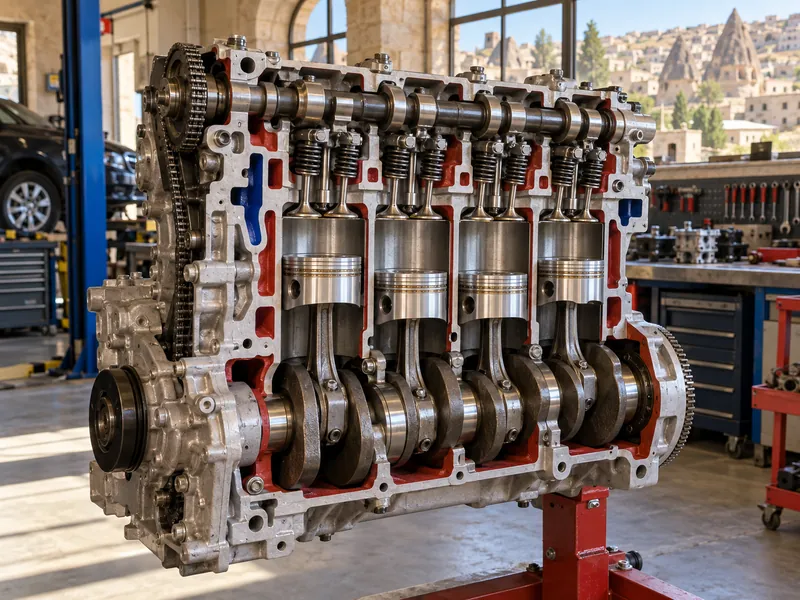

Araç TekniğiKonu 1 / 1046 çıkmış soru
Motor ve çalışma prensibi
Motorun yakıttan elde ettiği ısı enerjisini harekete nasıl çevirdiğini, dört zamanlı çevrimi, benzinli ile dizel motor arasındaki farkları ve silindir bloğundan kartere kadar motorun temel parçalarını anlatır.

1Konu anlatımı
Akılda kalsın
- Dört zamanlı motorda sıra Emme – Sıkıştırma – İş (Ateşleme) – Egzoz şeklindedir; sıkıştırma 2. zamandır.
- Benzinli motorda emme zamanında yakıt-hava karışımı alınır ve sıkıştırılan karışım buji kıvılcımıyla ateşlenir.
- Dizel motorda emme zamanında yalnızca hava alınır; motorin, sıkıştırılıp ısınan havanın üzerine enjektörle püskürtülünce kendiliğinden tutuşur.
- Yanmış gazları silindirlerden toplayıp egzoz borusuna ileten parça egzoz manifoldudur; sesi susturucu azaltır, zararlı gazları katalitik konvertör dönüştürür.
- Silindir bloğu pistonlara yataklık eden ana gövdedir; karter motorun altını kapatır ve motor yağına depoluk eder.
- Silindir kapak contası yanarsa motor yağına su, soğutma suyuna yağ karışır.
- Silindir ve segmanların aşınması motorun yağ yakmasına yol açar.
Motor nedir?
Motor, yakıttan elde ettiği ısı enerjisini mekanik enerjiye (harekete) çeviren makinedir ve araçta hareket için gereken gücün kaynağıdır. Vites kutusu, şaft, diferansiyel ve tekerlekler bu gücü yalnızca tekerleklere taşır; fren ise aracı yavaşlatır. Taşıtlarda kullanılan benzinli ve dizel motorlar yakıtı doğrudan silindirlerin içinde yakar ve oluşan ısı enerjisini piston-biyel mekanizmasıyla krank miline iletir. Bu nedenle bunlara içten yanmalı motor denir.
Motorlar bir çevrimin kaç zamanda tamamlandığına göre iki zamanlı ve dört zamanlı olarak sınıflandırılır. Otomobillerin büyük çoğunluğunda dört zamanlı motor kullanılır.
Motorun temel parçaları
- Silindir bloğu (motor bloğu): Silindirlerin içinde bulunduğu ana gövdedir. Silindirler pistonlara yataklık eder; pistonlar bu silindirlerin içinde aşağı yukarı hareket eder. Blokta soğutma suyu ve yağ kanalları da bulunur.
- Silindir kapağı: Bloğun üstünü kapatır ve yanma odasını oluşturur. Supaplar ve bujiler (dizel motorda enjektörler) genellikle bu kapak üzerindedir.
- Silindir kapak contası: Blok ile kapak arasında sızdırmazlık sağlar; yağ ve su kanallarını birbirinden ayırır.
- Piston ve segmanlar: Piston, yanan gazların basıncıyla aşağı itilir. Segmanlar piston ile silindir arasında sızdırmazlık sağlar ve yağın yanma odasına geçmesini önler.
- Biyel ve krank mili: Biyel pistonu krank miline bağlar. Pistonun doğrusal hareketi krank milinde dönme hareketine çevrilir. Krank milinin ucundaki volan dönüşün düzgün olmasını sağlar.
- Eksantrik (kam) mili ve supaplar: Eksantrik mili hareketini krank milinden triger kayışı ya da zinciriyle alır ve supapları zamanında açıp kapatır. Emme supabı silindire karışımı (dizelde havayı) alır, egzoz supabı yanmış gazları dışarı bırakır. Supapların doğru zamanda ve doğru boşlukla çalışması için motorda supap ayarı yapılır.
- Emme manifoldu: Havayı veya yakıt-hava karışımını silindirlere dağıtır.
- Egzoz manifoldu: Silindirlerde yanmış gazları toplayarak egzoz borusuna, oradan susturucu yoluyla dışarı iletir.
- Karter: Motorun alt tarafını kapatır, hareketli parçaları dış etkenlerden korur ve motor yağına depoluk eder.
Dört zamanlı motorun çalışması
Dört zamanlı motorda bir çevrim, pistonun dört hareketiyle (krank milinin iki tam turuyla) tamamlanır. Zamanların sırası her zaman Emme – Sıkıştırma – İş (Ateşleme) – Egzoz şeklindedir.
| Zaman | Piston | Supaplar | Ne olur? |
|---|---|---|---|
| 1. Emme | Aşağı iner | Emme supabı açık | Benzinli motorda yakıt-hava karışımı, dizel motorda yalnızca hava silindire dolar. |
| 2. Sıkıştırma | Yukarı çıkar | İkisi de kapalı | Silindirdeki karışım (dizelde hava) sıkıştırılır. |
| 3. İş (Ateşleme) | Aşağı itilir | İkisi de kapalı | Benzinli motorda buji kıvılcımı karışımı ateşler; dizel motorda püskürtülen motorin kendiliğinden yanar. Genişleyen gazlar pistonu iter; güç bu zamanda elde edilir. |
| 4. Egzoz | Yukarı çıkar | Egzoz supabı açık | Yanmış gazlar silindirden dışarı atılır. |
Benzinli ve dizel motor farkı
| Özellik | Benzinli motor | Dizel motor |
|---|---|---|
| Yakıt | Benzin | Motorin (mazot) |
| Emme zamanında alınan | Yakıt-hava karışımı | Yalnızca hava |
| Ateşleme | Sıkıştırılmış karışım buji kıvılcımıyla ateşlenir. | Yüksek oranda sıkıştırılıp ısınan havanın üzerine enjektörle püskürtülen motorin kendiliğinden tutuşur. |
| Buji | Ateşleme bujisi vardır. | Ateşleme bujisi yoktur; soğukta kolay çalıştırma için ısıtma (kızdırma) bujisi bulunur. |
Egzoz sistemi
Yanmış gazlar egzoz supabından çıktıktan sonra sırasıyla egzoz manifoldu, egzoz borusu ve susturucudan geçerek dışarı atılır.
- Egzoz susturucusu: Silindirden yüksek basınçla çıkan gazların oluşturduğu sesi azaltır. Susturucusu çıkarılmış araç gürültü kirliliğine yol açar.
- Katalitik konvertör: İçindeki katalizör maddeler sayesinde egzoz gazındaki karbonmonoksit gibi zararlı bileşenleri daha az zararlı gazlara dönüştürür ve emisyonu azaltır.
Motorda sık görülen arıza belirtileri
- Motor yağında su, soğutma suyunda yağ: Silindir kapak contası yanmıştır; conta yağ ve su kanallarını artık birbirinden ayıramaz.
- Yağ yakma: Silindirler ve segmanlar aşındığında karterdeki yağ yanma odasına geçip yanar; motor yağı eksilir ve egzozdan mavimsi duman çıkar.
2Bu konunun soruları
MEB sınavlarında bu konudan çıkmış 46 soru (9 tanesi en az üç sınavda soruldu). Her soruda doğru cevabı ve açıklamasını hemen görürsünüz.
Hangi sorular?
Sıralama